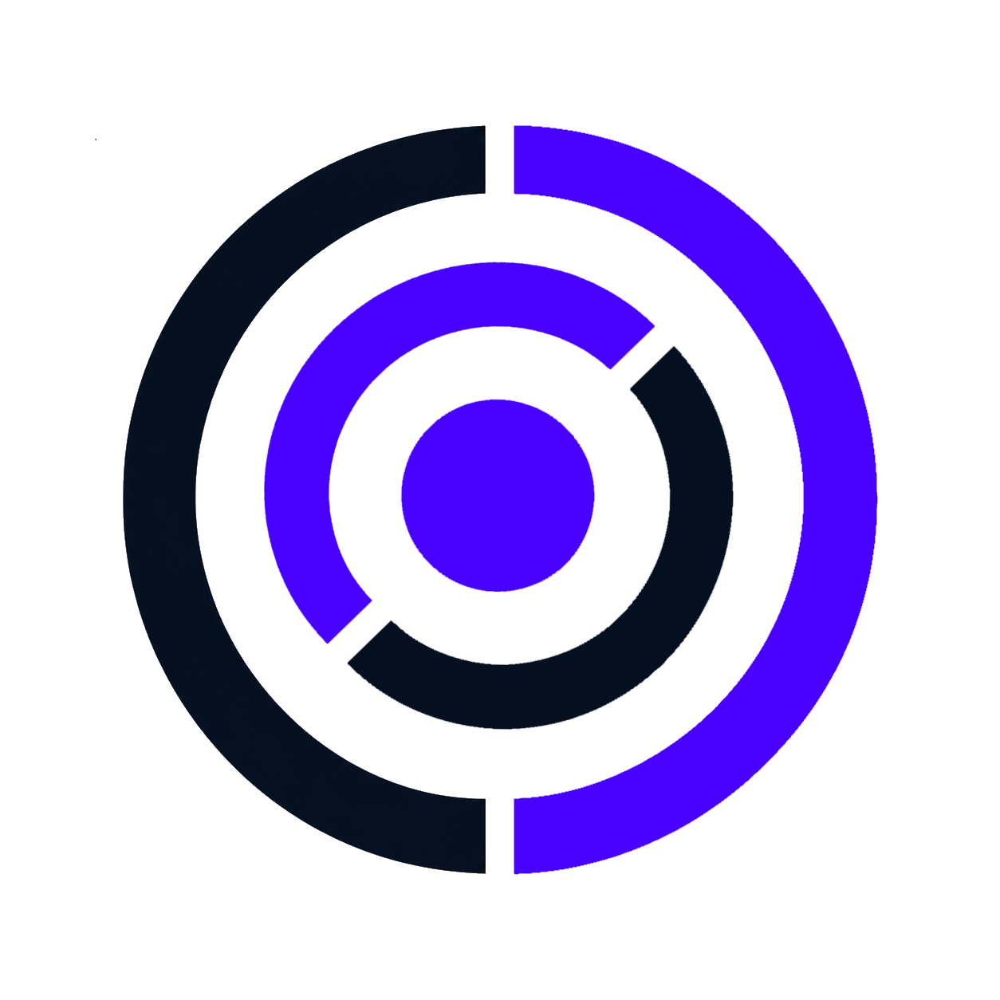

CYRQODE · Circle Mark

Версия 0.1. Наведите CYRQODE в прицел — автоматический поиск в кадре появится позже.
Не удалось получить доступ к камере в этом окне (частый случай — приложение открыло ссылку во встроенном просмотрщике без разрешения на камеру).